Overview
===========
This lab demonstrates the use of TI mmWave sensors to count and track up to 3 people simultaneously and detect their stance.
Detection and tracking algorithms run onboard the IWR6843ODS ES1.0 mmWave sensor and are used to localize people and track their movement with a high degree of accuracy. This demo is confgured to have the IWR6843ODS mounted overhead, with the antennas facing down.
mmWave sensors can reduce false detections from challenging environments such as direct sunlight, no-light, fog, or smoke, and are particularly suited for privacy-conscious applications.
In this demonstration, localization and tracking is performed upon any moving object in the scene; static objects such as chairs, tables, and walls are ignored.
The IWR6843 ES1.0 device outputs a data stream consisting of point cloud information and a list of tracked objects which can be visualized using the software included in this lab.
<img src="images/overview.gif" width="400"/> 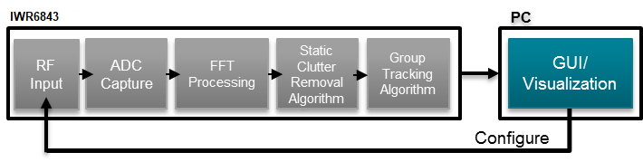
Quickstart
===========
Precompiled binary can be found at `Pre-compiled Binaries/pplcount_lab_68xx`. Each GUI has a pre-compiled version available in the GUI's folder.
1. Hardware and Software Requirements
-----------
### Hardware
Item | Details
--------------------------|-----------------
Device | [Industrial mmWave Carrier Board](http://www.ti.com/tool/MMWAVEICBOOST) and [IWR6843 ES1.0 ODS](http://www.ti.com/tool/IWR6843ISK). These two boards combined are referred to as the [Industrial mmWave Starter Kit](http://www.ti.com/tool/IWR6843-STARTER-BDL)
Mounting Hardware | The EVM needs to be mounted at 3 meters with the antennas facing down.
Computer | PC with Windows 7 or 10. If a laptop is used, please use the 'High Performance' power plan in Windows.
Micro USB Cable | Due to the high mounting height of the EVM, an 8ft+ cable or USB extension cable is recommended.
Power Supply | 5V, >2.5A with 2.1-mm barrel jack (center positive). The power supply can be wall adapter style or a battery pack with a USB to barrel jack cable.
### Software
Tool | Version | Required For |Download Link|
----------------------------|---------------------------|---------------|-------------|
mmWave Overhead People Counting Lab Handoff | 1.0.0 | Contains all lab material. |
TI mmWave SDK | Supplied with Demo | Compile People Counting Lab | This has been provided with the handoff.
MATLAB Runtime | 2017a (9.2) | Quickstart Visualizer | To run the quickstart visualizer the [runtime](https://www.mathworks.com/products/compiler/matlab-runtime.html) is sufficient.
Uniflash | Latest | Quickstart Firmware | [Download offline tool](http://www.ti.com/tool/UNIFLASH) or use [cloud version](https://dev.ti.com/uniflash/#!/)
2. Physical Setup
-----------
1. Setup the Carrier Board in standalone mode using the S1 switch combination as shown below.
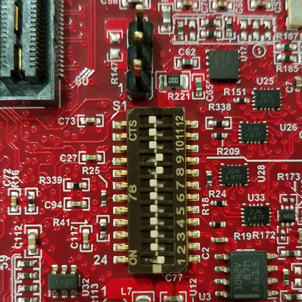 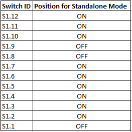
2. Connect the IWR6843ODS to the MMWAVEICBOOST board and mount the EVM vertically as shown below:
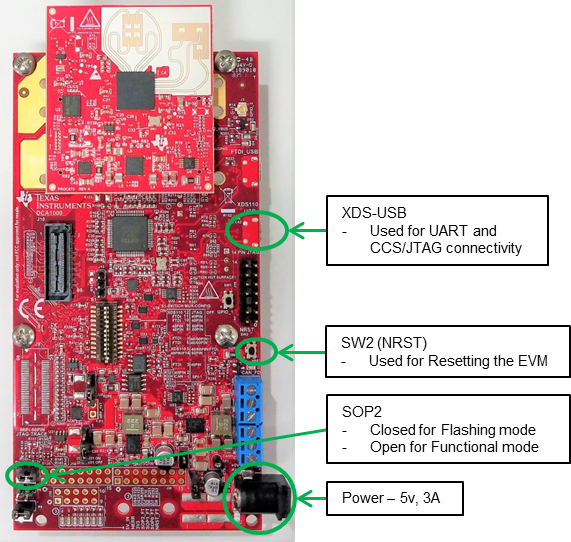
3. Plug in micro-usb and power supply to EVM using the connectors shown above.
**Setup Requirements:**
* Elevate EVM: 3m high
* Down tilt: 90 degree (Antennas Parallel with the Ground)
<a name="flash_the_evm"></a>
3. Flash the EVM
-----------
* Power on the EVM using a 5V/3A power supply.
* Flash the following image using **Uniflash**
Image | Location
--------------------------|------------
Meta Image 1/RadarSS | `C:\ti\<mmwave_industrial_toolbox_install_dir>\labs\lab0020-ods-pplcount-68xx\Pre-compiled binary\ods_pplcount_lab_xwr68xx.bin`
[[+d Expand for help using Uniflash
* Connect the EVM to your PC and check the COM ports in **Windows Device Manager**
* The EVM exports two virtual COM ports as shown below:
* XDS110 Class Application/User UART (COM UART): Used for passing configuration data and firmware to the EVM
* XDS110 Class Auxiliary Data Port (COM AUX): Used to send processed radar data output
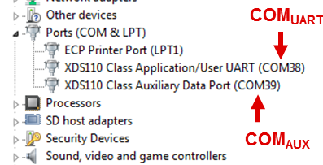
{{b Note the COM UART and COM AUX port numbers, as they will be used later for flashing and running the lab.}}
* Put the EVM in flashing mode by connecting jumpers on **SOP0** and **SOP2** as shown in the image. Then power cycle the EVM with **SW2** (NRST).
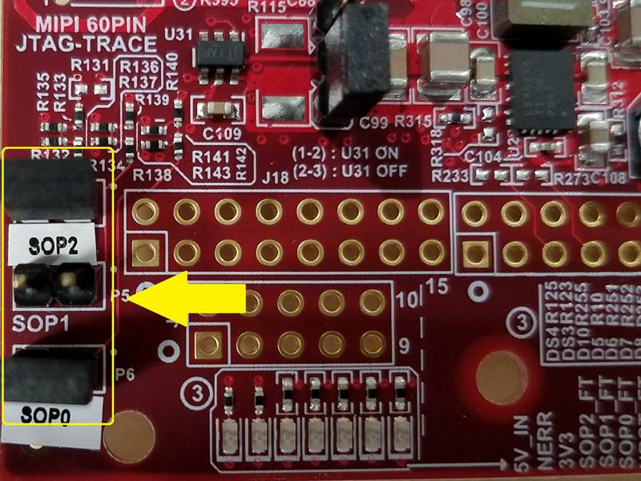 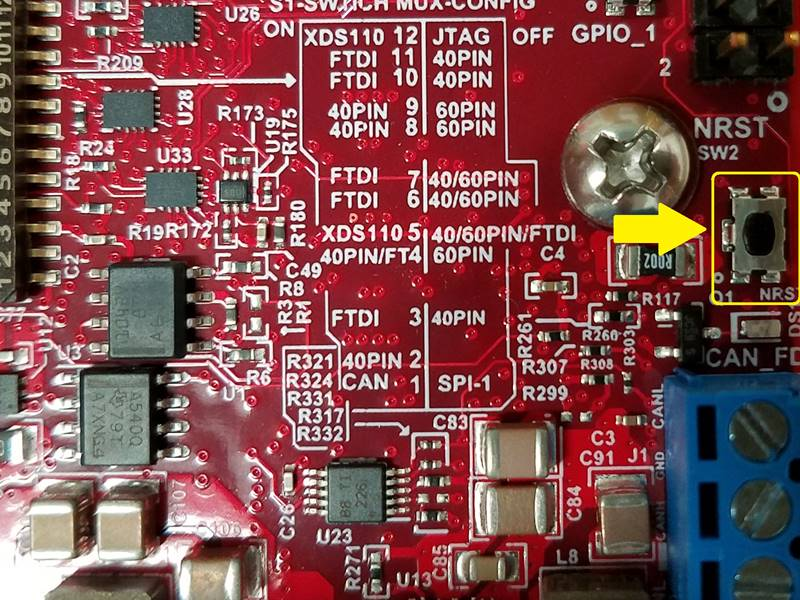
* Open the **UniFlash tool** ([Download offline tool](http://www.ti.com/tool/UNIFLASH) or use the [Cloud version](https://dev.ti.com/uniflash/#!/) )
* In the New Configuration section, locate and select the appropriate device (IWR6843 ES1.0)
* Click Start to proceed
<img src="images/common/uniflash_device_select.png" width="500"/>
* Click the **Settings & Utilities** tab. Under setup, fill the **COM Port** text box with the Application/User UART COM port number (COM UART) noted earlier.
* In the **Program** tab, browse and locate the images (.bin file) as specified in the lab directions.
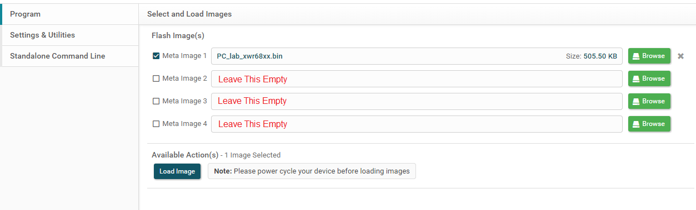
* **Power cycle** the device and click on **Load Images**
[[g! Successful Flash Procedure
UniFlash’s console should indicate: [SUCCESS] Program Load completed successfully
]]
* Power off the board and **remove only SOP2 jumper**
[[y SOP2 Removed?
Ensure that the jumper has been removed and the EVM power cycled. This puts the board back in functional mode.
]]
+]]
4. Run the Lab
-----------
To run the lab, launch and configure the visualizer which displays the detection and tracked object data received via UART.
### 1. Launch the visualizer:
* Navigate to `C:\ti\<mmwave_industrial_toolbox_install_dir>\labs\lab0015-pplcount-68xx\quickstart\pplcount_gui.exe`
* Run `pplcount_gui.exe`
* A black console log window will appear.
* After a few seconds, the Visualizer will begin running.
5. Understanding the Output GUI A - default GUI
-----------
<img src="images/visualizer.png" width="800"/>
The visualizer consists of:
* A top panel with a **Point Cloud** plot.
* The black points represent the point cloud returned by the detection layer of the device.
* Each new tracked object is assigned one of five possible colors (blue, red, green, cyan, and magenta).
* The small colored ring represents the computed centroid of the point cloud for the tracked object.
* The "snail trail" trace represent 100 frames of history of the tracked object's centroid.
* A bottom panel with a **Gating and Association** plot.
* This plot visualizes the result of the tracking algorithm.
* The colored points represent the detection points (black points in previous frame's Point Cloud plot) which are associated to a specific track. Unassociated points that do not belong to a track are not plotted.
* The colored circular ring is centered over the centroid of of the tracked object. The diameter of the ring is related to the variance in location of the tracked object's detection points.
* A side panel with three tabs: Statistics, Chirp Configuration, and Visualizer Options
* TIP: If lag is an issue, check the **Consolidate plotting** option in **Visualizer Options**. This will only display one of the two plots.
**Quitting the Visualizer** :
To exit the visualizer use the exit button at the bottom left of the window. This will delete the open serial ports and save an output file of the session in fhist.mat.
6. Understanding the Output GUI B - GUI with filtering
-----------
<img src="images/GUIB.png" width="800"/>
{{y If using the .exe, the guiCfg.txt file will not be used. Instead, COM Ports must be input in a dialog box. Static area will be limited to 2 meters left of the device, 2 meters right of the device, and 2 meters in front of the device (Top of antenna pattern).}}
The visualizer consists of:
* A main panel with a **Gating and Association** plot.
* This plot visualizes the result of the tracking algorithm.
* Hollow Circles with dotted lines represent newly allocated tracks - this will be colored based on stance.
* Filled circles represent tracks that the tracker is confident in.
* Hollow Grey circles with full lines represent static people who are no longer creating radar detection points.
* Each new tracked object is assigned one of 3 possible colors (blue, green, or grey), based on the Stance of the target.
* Grey = Stance Unknown
* Green = Standing
* Blue = Sitting
* A side panel with four tabs: Statistics, Chirp Configuration, Visualizer Options, and a Legend
**Quitting the Visualizer** :
To exit the visualizer use the exit button at the bottom left of the window. This will delete the open serial ports and save an output file of the session in fhist.mat.
Developer's Guide
===========
Build the Firmware from Source Code
-----------
### 1. Software Requirements
Tool | Version | Download Link
----------------------------|---------------------------|--------------
Overhead Stance Detection Lab | 1.0.0 | Provided
TI mmWave SDK | 3.1.1.2 | [TI mmWave SDK 3.0.x](http://software-dl.ti.com/ra-processors/esd/MMWAVE-SDK/latest/index_FDS.html) and all the related tools are required to be installed as specified in the mmWave SDK release notes
Code Composer Studio | 8.1.0 | [Code Composer Studio v8](http://processors.wiki.ti.com/index.php/Download_CCS#Code_Composer_Studio_Version_8_Downloads)
TI SYS/BIOS | 6.52.0.12 | Included in mmWave SDK installer
TI ARM Compiler | 16.9.1.LTS | Included in mmWave SDK installer
TI CGT Compiler | 8.1.3 | Included in CCS
XDC | 3.50.08.24 | Included in mmWave SDK installer
C64x+ DSPLIB | 3.4.0.0 | Included in mmWave SDK installer
C674x DSPLIB | 3.4.0.0 | Included in mmWave SDK installer
C674x MATHLIB (little-endian, elf/coff format) | 3.1.2.1 | Included in mmWave SDK installer
mmWave Radar Device Support Package | 1.6.1 or later | Upgrade to the latest using CCS update process (see SDK user guide for more details)
TI Emulators Package | 7.0.188.0 or later | Upgrade to the latest using CCS update process (see SDK user guide for more details)
Uniflash | Latest | Uniflash tool is used for flashing TI mmWave Radar devices. [Download offline tool](http://www.ti.com/tool/UNIFLASH) or use the [Cloud version](https://dev.ti.com/uniflash/#!/)
[[r! TI mmWave SDK
Before the project can be compiled, the "mmwave_sdk_IWR6843TC_01_00_00_01" folder must be placed in C:\ti
]]
### 2. Import Lab Project
For the People Counting lab, there are two projects, the DSS for the C674x DSP core and the MSS project for the R4F core, that need to be imported to CCS and compiled to generate firmware for the xWR6843.
* Start CCS and setup workspace as desired.
* Import the projects below to CCS using either TI Resource Explorer in CCS or CCS Import Projectspecs method:
* **ods_pplcount_dss_xwr68xx**
* **ods_pplcount_mss_xwr68xx**
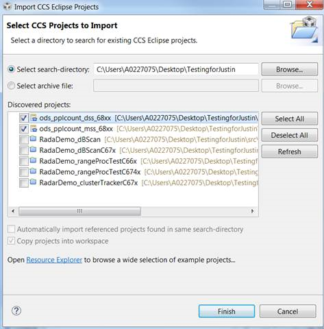
[[+d Expand for details on importing via CCS Import Projectspecs
* In the top toolbar, navigate to **Project > Import CCS Projects...**
* With the **Select search-directory** option enabled, click **Browse...**, navigate to the **lab0020-ods-pplcount-68xx** folder at `C:\ti\<mmwave_industrial_toolbox_install_dir>\labs\lab0020-ods-pplcount-68xx`, and then click **OK**.
* Under **Discovered projects**, select **ods_pplcount_dss_xwr68xx** and **ods_pplcount_mss_xwr68xx** (ignore any other projects), then click **Finish**.
+]]
[[g! Successful Import to IDE
After using either method, both project should be visible in **CCS Project Explorer**
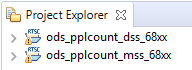
]]
[[b! Project Workspace
When importing projects to a workspace, a copy is created in the workspace. All modifications will only be implemented for the workspace copy. The original project downloaded in mmWave Industrial Toolbox is not touched.
]]
### 3. Build the Lab
#### **Build DSS Project**
The DSS project must be built before the MSS project.
With the **ods_pplcount_dss_xwr68xx** project selected in **Project Explorer**, right click on the project and select **Rebuild Project**. Selecting **Rebuild** instead of **Build** ensures that the project is always re-compiled. This is especially important in case the previous build failed with errors.
[[g! Successful DSS Project Build
In the **Project Explorer** panel, navigate to and expand **ods_pplcount_dss_xwr68xx > Debug** directory. The project has been successfully built if the following files appear in the **Debug** folder:
* ods_pplcount_dss_68xx.bin
* ods_pplcount_dss_68xx.xe674
]]
#### **Build MSS Project**
After the DSS project is successfully built, select **ods_pplcount_mss_xwr68xx** in **Project Explorer**, right click on the project and select **Rebuild Project**.
[[g! Successful MSS Project Build
In the **Project Explorer** panel, navigate to and expand **ods_pplcount_mss_xwr68xx > Debug** directory. The project has been successfully built if the following files appear in the **Debug** folder:
* ods_pplcount_mss_68xx.bin
* ods_pplcount_mss_68xx.xer4f
* ods_pplcount_lab_68xx.bin
]]
[[r! Build Fails with Errors
If the build fails with errors, please ensure that all the [prerequisites](#software) are installed as mentioned in the mmWave SDK release notes.
]]
### 4. Execute the Lab
There are two ways to execute the compiled code on the EVM:
* Deployment mode: the EVM boots autonomously from flash and starts running the bin image
* Using Uniflash, flash the **ods_pplcount_lab_68xx.bin** found at `<PROJECT_WORKSPACE_DIR>\ods_pplcount_mss_68xx\Debug\pplcount_lab_68xx.bin`
* The same procedure for flashing can be use as detailed in the Quickstart [Flash the Device](#1-flash-the-device) section.
* Debug mode: enables connection with CCS while lab is running; useful during development and debugging
[[+d Expand for help with Debug mode:
The CCS debug firmware (provided with the mmWave SDK) needs to be flashed once on the EVM.
* CCS Debug method is enabled by flashing the CCS Debug Firmware (provided with the mmWave SDK) using the methods covered in the Quickstart [Flash the Device](#1-flash-the-device) section.
* Use the following image instead
Image | Location | Comment
--------------------------|----------------------------|------------------------
Meta Image 1/RadarSS | `C:\ti\mmwave_sdk_<ver>\packages\ti\utils\ccsdebug\xwr68xx_ccsdebug.bin` | Provided with the mmWave SDK
After the CCS debug firmware has been flashed, connect the EVM to CCS
* Create a target configuration (skip to "Open the target..." if config already created previously in another lab for xwr68xx)
* Go to **File > New > New Target Configuration File**
* Specify an appropriate file name (ex: IWR68xx.ccxml) and check "**Use shared location**". Click **Finish**.
* In the configuration editor window:
* Select **Texas Instruments XDS110 USB Debug Probe** for Connection
* Select **IWR6843** device as appropriate in the Board or Device text box.
* Press the **Save** button to save the target configuration.
* [Optional]: Press the **Test Connection** button to check the connection with the board.
* Open the target configuration window by going to **View > Target Configurations**.
* Under **User Defined** configurations the target configuration previously created should appear.
* Right click on the target configuration and select **Launch Select Configuration**. The target configuration will launch in the **Debug Window**.
<img src="images/target_config.png" width="350"/>
* Connect to Cores
* Select the **Texas Instruments XDS110 USB Debug probe/C674X_0**, then right click and select **Connect Target**
* Select the **Texas Instruments XDS110 USB Debug probe/Cortex_R4_0** and then right click and select **Connect Target**
* Load the binary
* Once both targets are connected, click on the C674X_0 target and then click **Load** button in the toolbar.
<img src="images/load_program.png" width="500"/>
* In the **Load Program** dialog, press the **Browse Project** button .
* Select **ods_pplcount_dss_68xx.xe674** found at `<PROJECT_WORKSPACE_DIR>\ods_pplcount_dss_68xx\Debug\ods_pplcount_dss_68xx.xe674` and press **Ok**.
* Press **Ok** again in the **Load Program** dialog.
* Repeat the above Load the Binary process for the Cortex_R4_0 target, selecting instead **ods_pplcount_mss_68xx.xer4f** found at `<PROJECT_WORKSPACE_DIR>\ods_pplcount_mss_68xx\Debug\ods_pplcount_mss_68xx.xer4f`
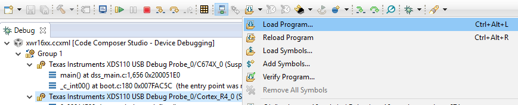
* Run the binary
* Select **Texas Instruments XDS110 USB Debug probe/Cortex_R4_0**, press the **Run/Resume** button <img src="images/run_resume_icon.png" width="30"/>
* Repeat above step for the **Texas Instruments XDS110 USB Debug probe/C674X_0**
* The program should start executing and generate console output as shown.
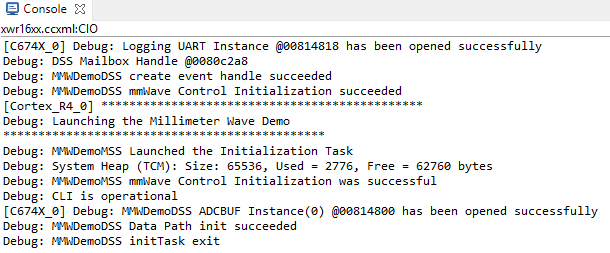
[[g! Successful Run Binary
If binary is running correctly, the Console will include the “CLI is operational” message which indicates that the program is ready and waiting for the sensor configuration.
]]
+]]
After executing the lab using either method, the lab can be visualized using the [Quick Start GUI](#2-run-the-lab-visualizer) or continue to working with the [GUI Source Code](#getting-started-with-gui-source-files)
Visualizer Source Code
-----------
{{y Working with and running the Visualizer source files requires a MATLAB License not just the MATLAB Runtime Engine}}
The detection processing chain and group tracking algorithm are implemented in the firmware. The visualizer serves to read the UART stream from the device and then plot the detected points and tracked objects.
Source files are located at `C:\ti\mmwave_industrial_toolbox_<VER>\labs\lab0015-pplcount-68xx\gui`.
* **main_pplcount_viz.m**: the main program which reads and parses the UART data for visualization
* **setup.m**, **setup.fig**: creates the visualizer configuration window used in GUI setup mode where user can input setup parameters
* **mmw_pplcount_demo_default.cfg**: configuration file
Data Formats
-----------
A TLV(type-length-value) encoding scheme is used with little endian byte order. For every frame, a packet is sent consisting of a fixed sized **Frame Header** and then a variable number of TLVs depending on what was detected in that scene. The TLVs can be of types representing the 2D point cloud, target list object, and associated points.
<img src="images/packet_structure.png" width="600"/>
### Frame Header
Size: 52 bytes
```Matlab
frameHeaderStructType = struct(...
'sync', {'uint64', 8}, ... % syncPattern in hex is: '02 01 04 03 06 05 08 07'
'version', {'uint32', 4}, ... % 0xA6843
'platform', {'uint32', 4}, ... % See description below
'timestamp', {'uint32', 4}, ... % 600MHz free running clocks
'packetLength', {'uint32', 4}, ... % In bytes, including header
'frameNumber', {'uint32', 4}, ... % Starting from 1
'subframeNumber', {'uint32', 4}, ...
'chirpMargin', {'uint32', 4}, ... % Chirp Processing margin, in ms
'frameMargin', {'uint32', 4}, ... % Frame Processing margin, in ms
'uartSentTime' , {'uint32', 4}, ... % Time spent to send data, in ms
'trackProcessTime', {'uint32', 4}, ... % Tracking Processing time, in ms
'numTLVs' , {'uint16', 2}, ... % Number of TLVs in thins frame
'checksum', {'uint16', 2}); % Header checksum
```**Frame Header Structure in MATLAB syntax for name, type, length**
```Matlab
% Input: frameheader is a 52x1 double array, each index represents a byte of the frame header
% Output: CS is checksum indicator. If CS is 0, checksum is valid.
function CS = validateChecksum(frameheader)
h = typecast(uint8(header),'uint16');
a = uint32(sum(h));
b = uint16(sum(typecast(a,'uint16')));
CS = uint16(bitcmp(b));
end
```**validateChecksum(frameheader) in MATLAB syntax**
### TLVs
The TLVs can be of type **POINT_CLOUD_2D**, **TARGET_LIST_2D**, or **TARGET_INDEX**.
#### **TLV Header**
Size: 8 bytes
```Matlab
% TLV Type: 06 = Point cloud, 07 = Target object list, 08 = Target index
tlvHeaderStruct = struct(...
'type', {'uint32', 4}, ... % TLV object
'length', {'uint32', 4}); % TLV object Length, in bytes, including TLV header
```**TLV header in MATLAB syntax**
Following the header, is the the TLV-type specific payload
#### **Point Cloud TLV**
Type: POINT_CLOUD_3D
Size: sizeof (tlvHeaderStruct) + sizeof (pointStruct2D) x numberOfPoints
<img src="images/tlv_pointcloud_structure.png" width="250"/>
Each Point Cloud TLV consists of an array of points. Each point is defined in 16 bytes.
```java
pointStruct2D = struct(...
'range', {'float', 4}, ... % Range, in m
‘azimuth', {'float', 4}, ... % Angle, in rad
'elevation' {'float', 4}, ... %Elevation, in rad
'doppler', {'float', 4}, ... % Doppler, in m/s
'snr', {'float', 4}); % SNR, ratio
```**Point Structure in MATLAB syntax**
#### **Target Object TLV**
Type: TARGET_LIST_2D
Size: sizeof (tlvHeaderStruct) + sizeof (targetStruct2D) x numberOfTargets
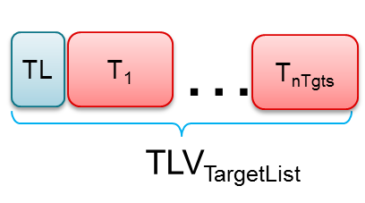
Each Target List TLV consists of an array of targets. Each target is defined in 68 bytes.
```java
targetStruct2D = struct(...
'tid', {'uint32', 4}, ... % Track ID
'posX', {'float', 4}, ... % Target position in X dimension, m
'posY', {'float', 4}, ... % Target position in Y dimension, m
'posZ', {'float', 4}, ... % Target position in Z dimension, m
'velX', {'float', 4}, ... % Target velocity in X dimension, m/s
'velY', {'float', 4}, ... % Target velocity in Y dimension, m/s
'velZ', {'float', 4}, ... % Target velocity in Z dimension, m/s
'dimX', {'float', 4}, ... % Target size in X dimension, m
'dimY', {'float', 4}, ... % Target size in Y dimension, m
'dimZ', {'float', 4}, ... % Target size in Z dimension, m
```**Target Structure in MATLAB syntax**
#### **Target Index TLV**
Type: TARGET_INDEX
Size: sizeof (tlvHeaderStruct) + numberOfPoints (NOTE: here the number of points are for frame n-1)
<img src="images/tlv_targetid_structure.png" width="250"/>
Each Target List TLV consists of an array of target IDs. A targetID at index ***i*** is the target to which point ***i*** of the previous frame's point cloud was associated.
Valid IDs range from 0-249.
```java
targetIndex = struct(...
'targetID', {'uint8', 1}); % Track ID
```**Target ID Structure in MATLAB syntax**
Other Target ID values:
Value | Meaning
------------|-----------
253 | Point not associated, SNR too weak
254 | Point not associated, located outside boundary of interest
255 | Point not associated, considered as noise
Need More Help?
===========
* Find answers to common questions on <a href="https://e2e.ti.com/support/sensor/mmwave_sensors/w/wiki" target="_blank">mmWave E2E FAQ</a>
* Search for your issue or post a new question on the <a href="https://e2e.ti.com/support/sensor/mmwave_sensors/f/1023" target="_blank">mmWave E2E forum</a>
* See the SDK for more documentation on various algorithms used in this demo. Start at <MMWAVE_SDK_DIRECTORY>/docs/mmwave_sdk_module_documentation.html>